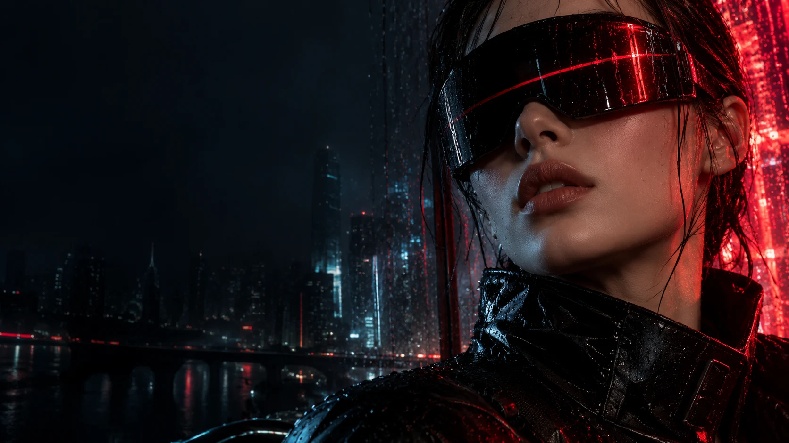
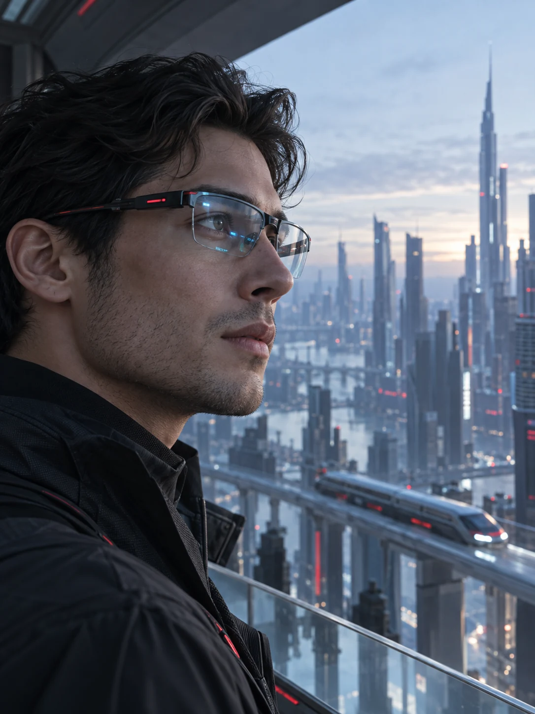
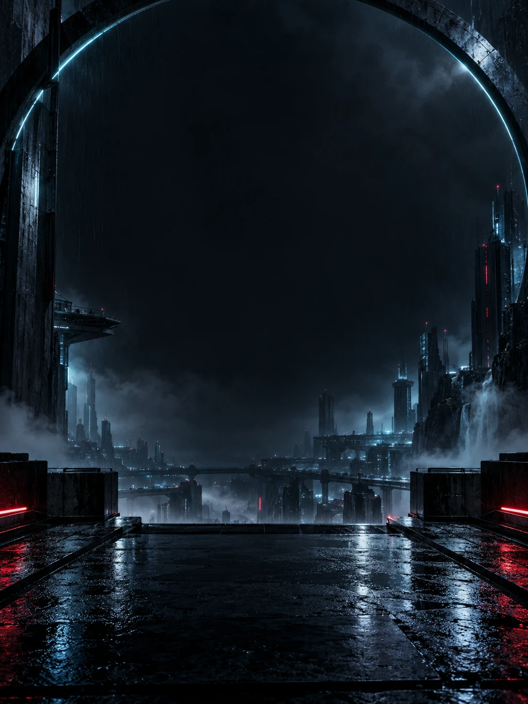
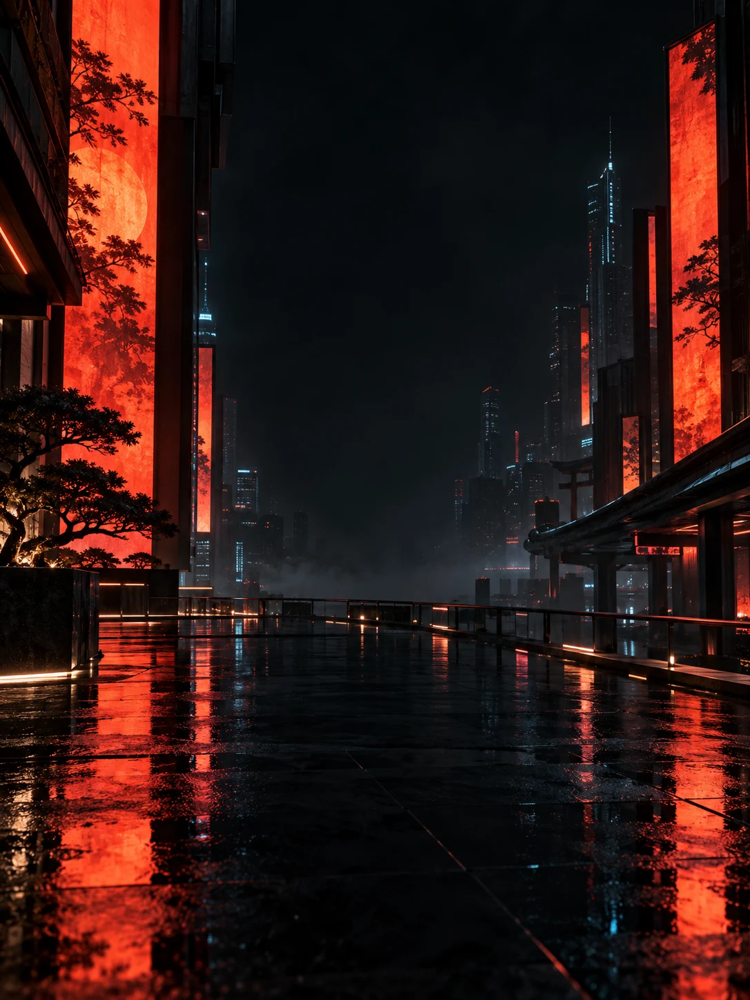

Não assista.
Esteja lá.
A cidade vira cenário. O filme vira destino. Descubra a sensação de levar uma experiência particular de entretenimento para onde você for.

O FUTURO CABE NO SEU OLHAR.
A realidade é só o começo.
Óculos tecnológicos para quem
não nasceu para o modo padrão.
DESLIGUE O COMUM.
Seu cinema particular.
Seu próximo universo.
Seu momento de sair daqui.
O estúdio 3D não carregou.
Continue rolando para conhecer os sensores e o áudio integrado.
Minimalismo por fora.
Um universo por dentro.
MENOS TELA ENTRE VOCÊ E A VIDA.

A cidade vira cenário. O filme vira destino. Descubra a sensação de levar uma experiência particular de entretenimento para onde você for.
Seu próximo mundo não precisa de uma sala. Uma coleção pensada para aproximar o digital da sua rotina, sem pedir que você pare de viver.
Linhas precisas. Presença impossível de ignorar. Escolha entre o branco essencial, a atitude urbana e o design que já parece ter vindo do amanhã.
Realidade aumentada ou conexão cotidiana.
Qual é a sua próxima versão?

3D indisponível.
O mundo continua aí.
Agora, com mais possibilidades.
Uma silhueta técnica para quem quer explorar a fronteira entre o que vê e o que pode descobrir.

3D indisponível.
Extraordinário no design.
Natural no seu dia.
O encontro entre óculos e tecnologia. Uma presença discreta para acompanhar uma vida que não para.